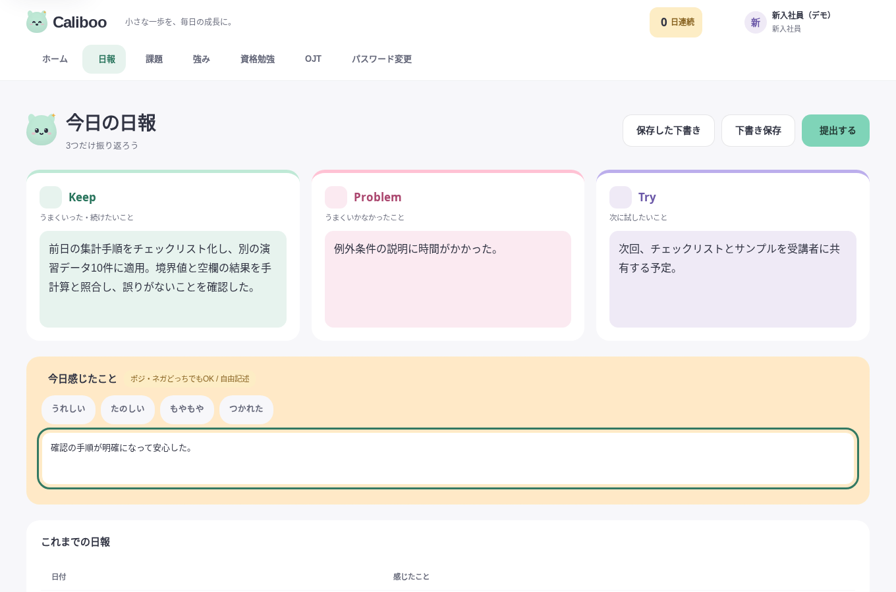
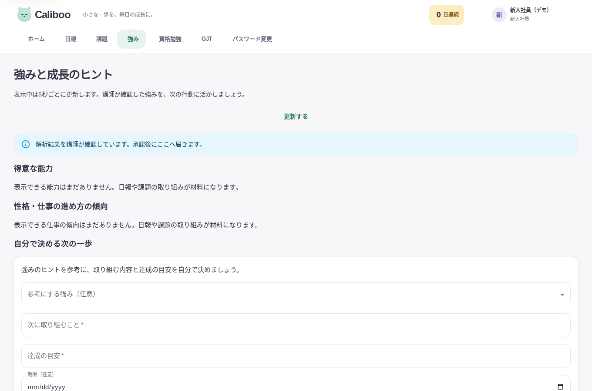
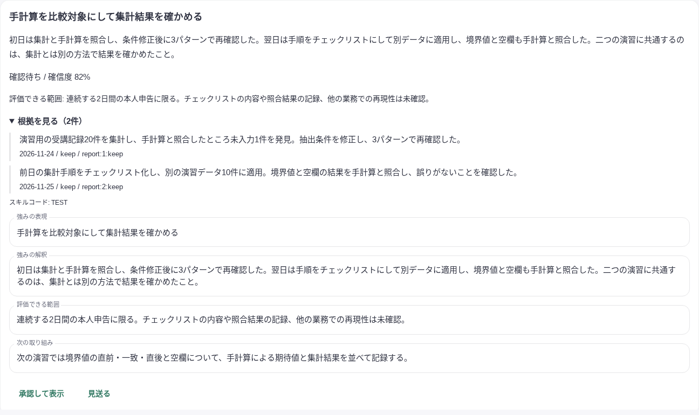
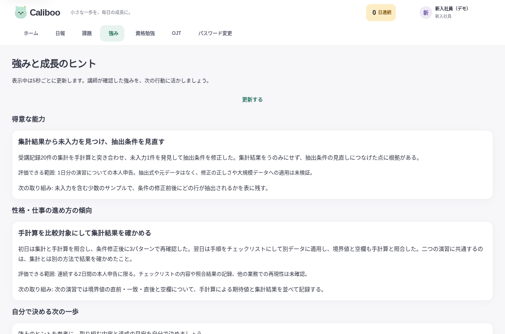

質問があったときに見せる、90秒の操作デモ。実ブラウザー画面・実API応答に基づく。
学んだことを記録し、強みの候補として言語化する。
架空の新入社員が、集計結果を手計算で照合した2日間を例にします。
独立したCodexのAIが原文に基づいて解析。Calibooが結果を取り込み、講師の確認を経て本人画面へ届けます。
本画面資料は収録済み。ライブ推論や本番精度のデモではありません。追加の有料APIは使用していません。
「提出する」で解析待ちジョブが作成される。これは架空の当日分の入力画面。

独立Codexの実応答2候補を取り込んだ直後。本人にはまだ候補が表示されていない。

2日報から共通する行動を抽出。講師は原文引用を確認し、表現修正・見送り・承認を選べる。

強みの解釈だけでなく、観測した範囲と次の小さな取り組みを本人画面で確認できる。

独立解析へ渡した材料は日報原文とスキーマ。本人IDや期待する強みラベルは渡していない。
本人申告。根拠として使用可。
本人申告。根拠として使用可。
実AI出力 1 / 能力： 集計結果から未入力を見つけ、抽出条件を見直す（11/24の引用）
実AI出力 2 / 仕事の進め方： 手計算を比較対象にして集計結果を確かめる（2日分の引用）
取込の実測： 初回はnotesが配列のためHTTP 422で拒否。AIが型だけ修正して再取込、HTTP 200・2候補。講師ロールの模擬承認2件とも成功。